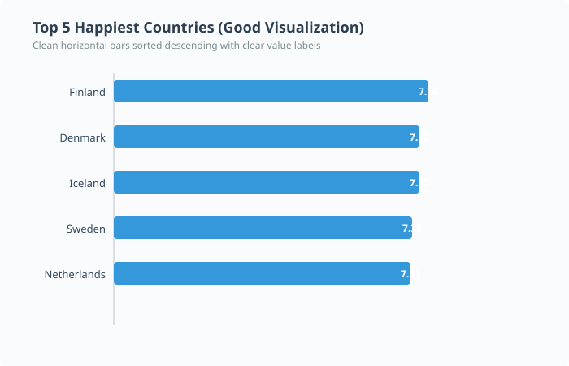
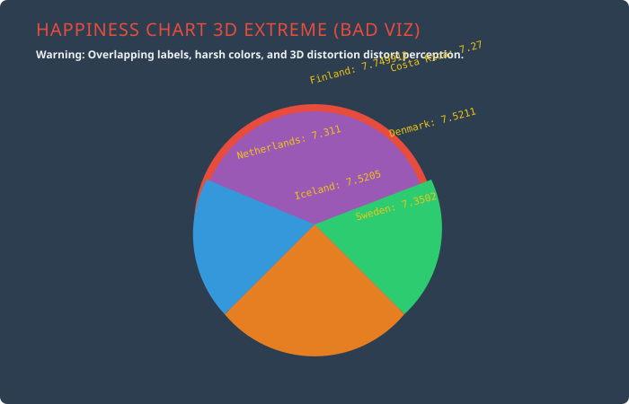

Data Source: World Population Review — Happiest Countries in the World

Why this works: The horizontal bar chart cleanly presents countries in descending order by score. It provides high data-to-ink ratio, zero clutter, and readable labels for fast visual scanning.

Why this fails: The chart suffers from severe visual noise, clashing neon colors, distorted 3D perspectives, and overlapping text labels that dramatically increase cognitive load and obscure data insights.